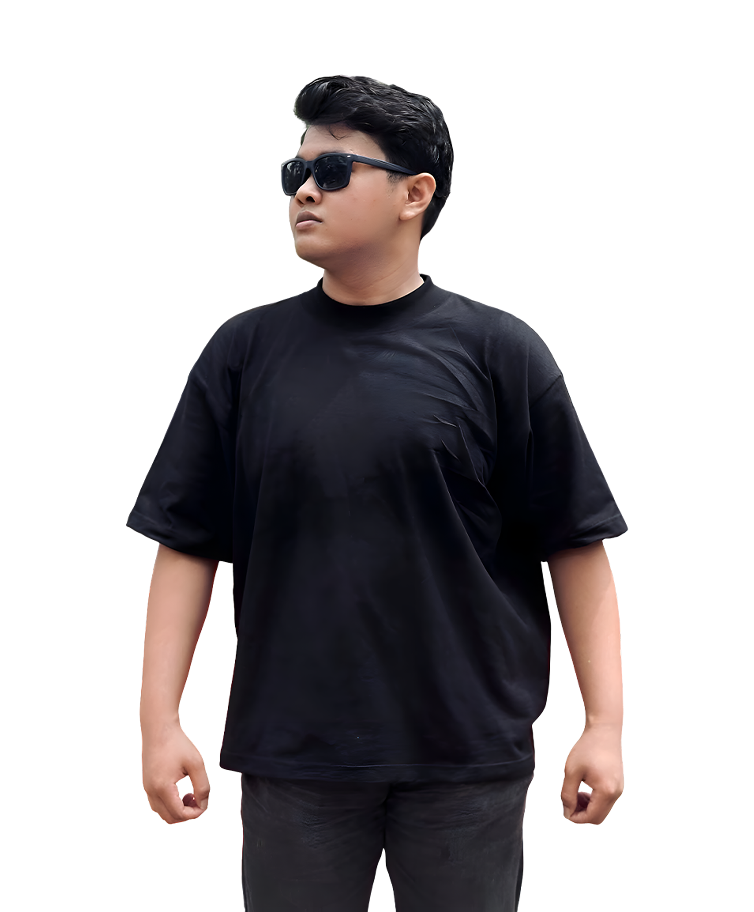

Design
Graphic Design
Saya menciptakan desain visual yang kuat dan konsisten untuk memperkuat identitas brand. Setiap karya dirancang agar menarik perhatian dan mudah diingat.
Hello,
Menciptakan Solusi Digital & Visual dari Berbagai Sudut
Saya adalah kreator yang mengerjakan berbagai jenis proyek.
Mulai dari desain visual, pengembangan website, hingga eksperimen digital dengan fokus pada kualitas, fungsi, dan pengalaman pengguna.

%20(1).jpg)
About me
Saya adalah individu yang tertarik pada berbagai bidang kreatif dan teknologi. Saya senang mengeksplorasi ide baru, mempelajari hal baru, dan mengubah konsep menjadi proyek nyata.
Specializing In
Saya menciptakan desain visual yang kuat dan konsisten untuk memperkuat identitas brand. Setiap karya dirancang agar menarik perhatian dan mudah diingat.
Saya menghasilkan visual yang bersih, estetik, dan profesional. Konten siap digunakan untuk branding dan kebutuhan digital.
Saya membangun website yang modern, responsif, dan fungsional. Menggabungkan desain visual dan performa yang optimal.
Portfolio
Hire me?